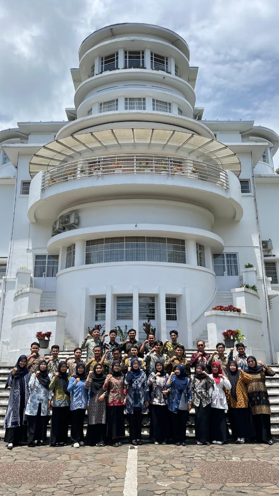
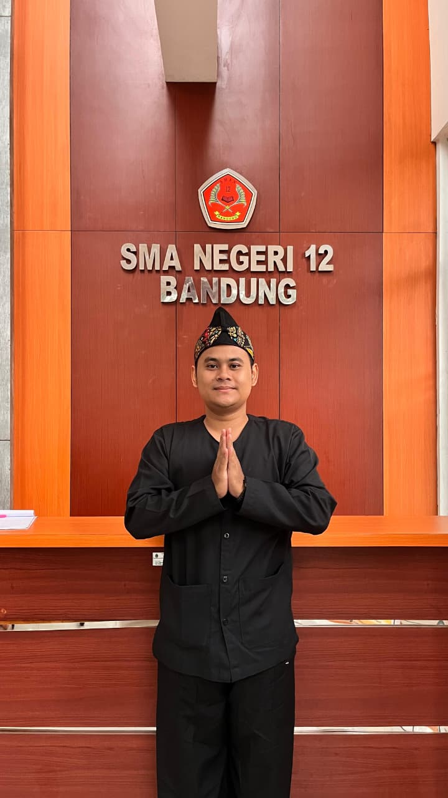

Program Pendidikan Profesi Guru (PPG) Informatika di Universitas Pendidikan Indonesia berfokus pada pengembangan kompetensi pedagogik dan profesionalisme guru dalam menghadapi transformasi digital di dunia pendidikan.
Melalui program ini, calon guru dibekali kemampuan merancang, melaksanakan, dan mengevaluasi pembelajaran Informatika yang inovatif, adaptif, serta berorientasi pada kebutuhan peserta didik di era digital. Program ini juga menekankan penguatan karakter pendidik, pemanfaatan teknologi pendidikan, serta penerapan praktik mengajar yang reflektif dan berkelanjutan.


Saya adalah peserta Pendidikan Profesi Guru (PPG) Bidang Studi Informatika Universitas Pendidikan Indonesia Tahun 2026 yang memiliki ketertarikan kuat pada pengembangan teknologi pendidikan, pemrograman, analisis data, dan inovasi pembelajaran digital. Melalui pengalaman akademik dan praktik mengajar, saya terus mengembangkan kompetensi profesional sebagai calon guru Informatika yang mampu mengintegrasikan teknologi ke dalam proses pembelajaran untuk menciptakan pengalaman belajar yang aktif, kreatif, dan bermakna bagi peserta didik.
| Nama Lengkap | : Arjun Yuda Firwanda |
| NIM | : 2530809 |
| Program | : Pendidikan Profesi Guru (PPG) |
| Bidang Studi | : Informatika |
| Perguruan Tinggi | : Universitas Pendidikan Indonesia |
| Tahun | : 2026 |
| Fokus Keilmuan | : Teknologi Pendidikan, Web Development, Data Analytics, Machine Learning |
| Lokasi Praktik Pengalaman Lapangan | : SMA Negeri 12 Bandung |
| Kepala Sekolah | : Aam Hamzah., S.Pd. |
| Guru Pamong | : Moch. Rizki Saepuloh., S.Tr.Kom., M.Ikom., Gr. |
| Dosen Pembimbing Lapangan | : Jajang Kusnendar, M.T. |
Menguasai kompetensi pedagogik sesuai standar nasional pendidikan.
Mampu merancang pembelajaran Informatika berbasis teknologi digital.
Mampu melaksanakan asesmen diagnostik, formatif, dan sumatif.
Mengembangkan media pembelajaran inovatif berbasis TIK.
"Menginspirasi melalui teknologi, mendidik dengan hati, dan membentuk generasi digital yang berkarakter."
Menjadi pendidik profesional di bidang Informatika yang mampu mengintegrasikan teknologi, inovasi pembelajaran, dan nilai-nilai karakter dalam proses pendidikan guna membentuk peserta didik yang kritis, kreatif, adaptif, serta memiliki kemampuan berpikir komputasional untuk menghadapi tantangan era digital.
Mengembangkan pembelajaran Informatika yang inovatif dan berpusat pada peserta didik.
Menumbuhkan kemampuan berpikir komputasional dan literasi digital.
Menciptakan lingkungan belajar yang aman dan inklusif.
Mengintegrasikan nilai karakter dan etika digital.
Mengembangkan media pembelajaran berbasis teknologi.
Melakukan refleksi dan pengembangan kompetensi profesional berkelanjutan.
Sebagai calon Guru Informatika, saya berkomitmen untuk mengembangkan pembelajaran yang berpusat pada peserta didik, memanfaatkan teknologi secara efektif, dan menumbuhkan kemampuan berpikir komputasional sebagai bekal menghadapi tantangan abad ke-21. Saya meyakini bahwa setiap peserta didik memiliki potensi unik yang dapat berkembang melalui lingkungan belajar yang aman, inklusif, dan bermakna. Teknologi bukan sekadar alat, tetapi sarana untuk membangun kreativitas, kolaborasi, dan kemampuan pemecahan masalah yang relevan dengan kebutuhan masa depan.
Membangun proyek teknologi digital yaitu Sistem Informasi Manajemen Sarana Prasarana SMA Negeri 12 Bandung.
Melaksanakan praktik pembelajaran serta pengembangan media pembelajaran digital pada mata pelajaran Informatika kelas X3, X4, X5 SMA Negeri 12 Bandung.
Menempuh pendidikan di Politeknik Pos Indonesia Bandung jurusan Informatika (2017-2021) untuk mengembangkan kompetensi mendalam di bidang teknologi informasi serta inovasi pendidikan digital.
Menempuh pendidikan pada bidang Informatika dan mengembangkan kompetensi teknologi informasi serta pendidikan digital.